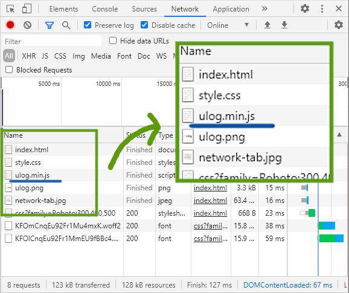
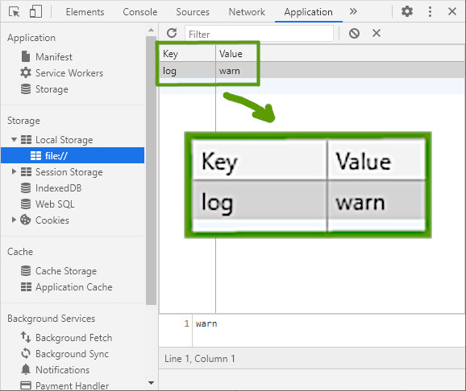
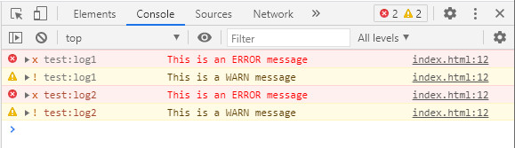
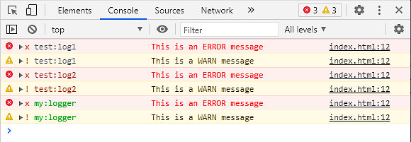
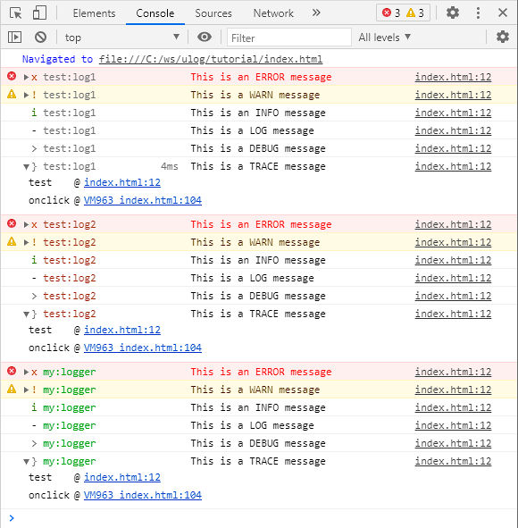
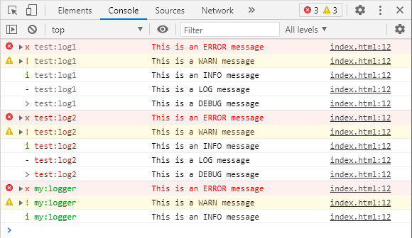
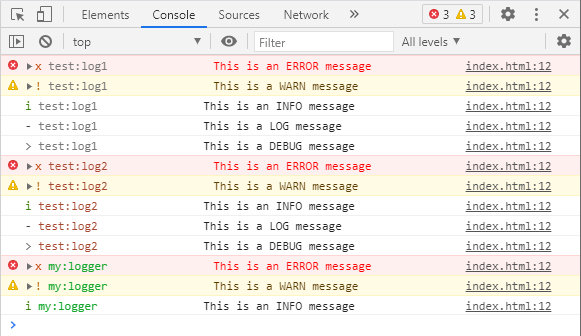
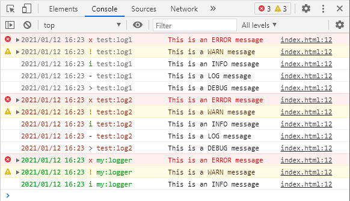
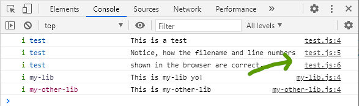
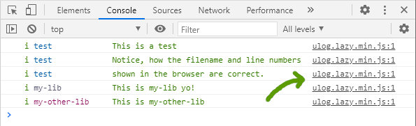

Tutorial
Tutorial
Follow the instructions to learn ulog as you read.
Have fun!
Open devtools
Open the developer tools (F12)
Check the Network tab
Switch to the Network tab, reload the page and note that `ulog.min.js` has loaded.
Enable logging
ulog.min.js uses lazy loading to only load the
bulk of the logging code once logging has been enabled.
To enable logging, add one of these keys to localStorage:
debug- This key sets the selected loggers to debug mode. For example,
debug=my-appwill set the logger named 'my-app' to debug mode,debug=test:*will set all loggers with names starting with 'test:' to debug anddebug=*will set all loggers to debug. log- This key is like an advanced version of the
debugkey, that let's you specify the level to set the loggers to. For example,log=my-app=infowill set the level of the logger named 'my-app' to info,log=test:*=debugsets the levels of all loggers with names starting with 'test:' to debug andlog=*=info(orlog=infofor short) will set the levels of all loggers to info.
Try it
Enable logging by setting the log level to warn.
You can set localStorage keys in the developer tools:
Alternatively, you can enter the
command localStorage.setItem('log', 'warn') in the
console, or simply press this button:
Enable logging now.
Check the network tab again
Notice how ulog.lazy.min.js has been loaded?
That's lazy loading in action! This allows ulog
to keep a tiny footprint while giving you powerful logging.
Log some messages
Press the button to log some messages
If you followed the steps so far, you should see 4 log messages:
Initially there are 2 loggers defined, test:log1 and test:log2. When you press the button, the test code loops through all loggers and logs a message at all levels with each of them.
Browse the sections below for details and experiment with creating loggers, changing config etc. Every time you want to test the new situation, press the button again.
Named loggers
In ulog all loggers have a name. Currently these loggers are defined:
- test:log1
- test:log2
You can remove them by pressing the 'x' button.
Creating a new logger
You can create a new logger with this code:
anylogger('my:logger')
Log some more messages to see the new logger in action. If you followed the steps, you should see extra messages from the new logger appear.
Levels
In ulog, there are 6 log levels:
| Level | Value |
|---|---|
| error | 1 |
| warn | 2 |
| info | 3 |
| log | 4 |
| debug | 5 |
| trace | 6 |
In addition there are the pseudo-levels none
(0) and all (7).
To change the level, you can set the key log to
a different value. Let's start by setting the level to
all to see all messages. Enter this code in the
console: localStorage.setItem('log', 'all'), or
press this button:
Then, Log some messages again. You should now see a lot more messages appear.
Native level filters
Possibly, you are not seeing the debug messages; that's
because Chromium-based browsers these days have their own built-in level
filter and by default, 'Verbose' messages are filtered away.
For clarity, it's probably best if you enable Verbose messages in
the browser. ulog gives you much finer control anyway.
Setting levels individually
Until now, we only set the global log level. But ulog
gives us fine-grained control over the levels of each individual
logger. We do this by specifying patterns and values in the
log configuration. For example, to set the global level to
info, but the level for all loggers whose name starts with
'test:' to debug, we set
log=info;test:*=debug.
You can enter this command in the console:
localStorage.setItem('log', 'info;test:*=debug')
Or press the button below:
Log more messages and check the results.
Colors
ulog supports colored logging if the output supports it.
By default this setting is enabled and will give us colors in all modern
browsers and the terminal in Node JS. The colors are based on the
logger name and are consistent across outputs. So if your logger is
blue in one browser, it should also be blue in other browsers and the
terminal. To disable colors, we can set log_color=off by
running this command in the console:
localStorage.setItem('log_color', 'off')
Or by pressing this button:
Log some messages again to see
the difference. Personally I think colors make the output easier
to read, but ulog leaves the choice to you.
The orange and red colors for the warn and
error messages in the screenshot above are a native
feature of Chromium-based browsers that are not controlled by
ulog.
You can target individual loggers here in the same way as with
levels. For example log_color=off;test:*=on would
enable colors only for those loggers with names starting with
'test:'.
Set log_color=on or press the button below to enable
colors again.
Alignment
By default, most browsers add some extra information to
error, warn and sometimes
info messages. While providing useful information,
they influence message indentation, making output harder to read.
For those outputs that support it, ulog emits
formatting that compensates for the indentation difference, nicely
aligning the log messages.
You can disable this feature by setting log_align=off
by entering the command
localStorage.setItem('log_align', 'off') in the console,
or pressing the button below:
Log more messages and see the difference.
I think alignment makes the output easier to read. Set
log_align=on again or press the button below to
turn alignment back on:
Formatting
Let's talk about formatting. It's here where ulog really
sets itself apart from the crowd. We can easily change the formatting
of the messages emitted by ulog loggers by changing the
log_format setting.
For example, let's change the format to include the date and time
a message was logged. We do this by setting
log_format=date time lvl name.
Now log some messages and check the resuls.
date, time, lvl and
name are all names of formats that come with
ulog. Check the documentation for a list of
included formats.
Click the button below to restore the default format:
Preserves callstack
ulog's formatting system has a unique feature: whenever
possible, it preserves the call stack. This may sound like a very
technical feature, but it has very practical consequences. To see what
this is all about, first let's log some messages that are coming from
different files:
Have a close look at the results. On the right of each message, the browser adds the filename and line number of the source file where the message originated from. This is a very useful feature!
ulog uses
kurly to
handle formatting and as long as your format only contains
static tags the callstack will be preserved. For comparison,
let's log some messages with a format that includes
message, a dynamic tag, to see the difference.
First, set the format to lvl name message:
Then, test the callstack again and compare:
Because message is a dynamic tag, ulog was
unable to preserve the callstack and the result is that now, the
filename and line numbers all point to ulog.lazy.min.js,
which is a lot less useful. But the message is now formatted and
the info messages are colored green. Whatever your
formatting preferences, ulog will always give you the
optimal results.
Further reading
You have now touched upon most of the features that ulog
includes out of the box. But ulog was written to be
completely modular and extensible. So if you are willing to write
some code, there is a whole lot more you can do with it. For example,
you can add custom formats, custom outputs, or indeed you can write
your own mods that can do... whatever you come up with!
Have a look at these sections of the documentation if you want to learn more about that:
Thanks for trying ulog!